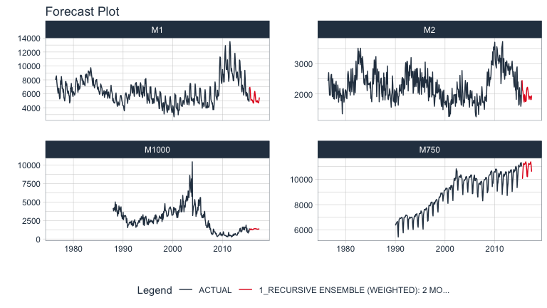
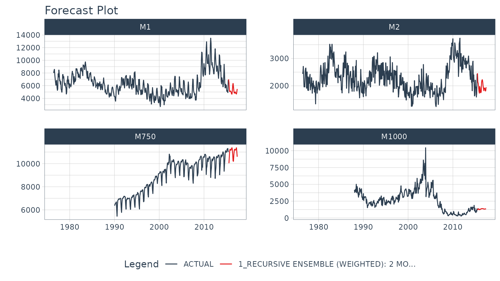

Autoregressive Forecasting (Recursive Ensembles)
Source:vignettes/recursive-ensembles.Rmd
recursive-ensembles.RmdWhat is a Recursive Model?
A recursive model uses predictions to generate new values for independent features. These features are typically lags used in autoregressive models.
Why is Recursive needed for Autoregressive Models?
It’s important to understand that a recursive model is only needed
when using lagged features with a Lag Size < Forecast
Horizon. When the lag length is less than the forecast horizon,
a problem exists were missing values (NA) are generated in
the future data.
A solution that recursive() implements is to iteratively
fill these missing values in with values generated from predictions.
This technique can be used for:
Single ensemble recursive predictions - Effectively turning any
ensemblemodel into an Autoregressive (AR) modelPanel ensemble recursive predictions - In many situations we need to forecast more than one time series. We can batch-process these with 1 model by processing time series groups as panels. This technique can be extended to recursive forecasting for scalable models (1 model that predicts many time series).
Here’s an example of a panel forecast that uses a recursive ensemble with Elastic Net and XGBoost models.

Single Ensemble Recursive Example
Use single ensembles to forecast a single time series
First, we need to load the necessary libraries:
library(modeltime.ensemble)
library(modeltime)
library(tidymodels)
library(glmnet)
library(xgboost)
library(dplyr)
library(lubridate)
library(timetk)Next, we select a forecast horizon of 24 days and extend the data
frame with the function future_frame(). We do this to
create a future dataset, which we can distinguish because its values
will be NA.
FORECAST_HORIZON <- 24
m750_extended <- m750 %>%
group_by(id) %>%
future_frame(
.length_out = FORECAST_HORIZON,
.bind_data = TRUE
) %>%
ungroup()The next step is to create a Transformer Function where we create the lagged variables that our model will use. Notice that we create lags up to our forecast horizon. We could also include rolling features and any number of other “engineered features” based on lags.
lag_transformer <- function(data){
data %>%
tk_augment_lags(value, .lags = 1:FORECAST_HORIZON)
}
# Data Preparation
m750_lagged <- m750_extended %>% lag_transformer()
m750_lagged#> # A tibble: 330 × 27
#> id date value value_lag1 value_lag2 value_lag3 value_lag4 value_lag5
#> <fct> <date> <dbl> <dbl> <dbl> <dbl> <dbl> <dbl>
#> 1 M750 1990-01-01 6370 NA NA NA NA NA
#> 2 M750 1990-02-01 6430 6370 NA NA NA NA
#> 3 M750 1990-03-01 6520 6430 6370 NA NA NA
#> 4 M750 1990-04-01 6580 6520 6430 6370 NA NA
#> 5 M750 1990-05-01 6620 6580 6520 6430 6370 NA
#> 6 M750 1990-06-01 6690 6620 6580 6520 6430 6370
#> 7 M750 1990-07-01 6000 6690 6620 6580 6520 6430
#> 8 M750 1990-08-01 5450 6000 6690 6620 6580 6520
#> 9 M750 1990-09-01 6480 5450 6000 6690 6620 6580
#> 10 M750 1990-10-01 6820 6480 5450 6000 6690 6620
#> # ℹ 320 more rows
#> # ℹ 19 more variables: value_lag6 <dbl>, value_lag7 <dbl>, value_lag8 <dbl>,
#> # value_lag9 <dbl>, value_lag10 <dbl>, value_lag11 <dbl>, value_lag12 <dbl>,
#> # value_lag13 <dbl>, value_lag14 <dbl>, value_lag15 <dbl>, value_lag16 <dbl>,
#> # value_lag17 <dbl>, value_lag18 <dbl>, value_lag19 <dbl>, value_lag20 <dbl>,
#> # value_lag21 <dbl>, value_lag22 <dbl>, value_lag23 <dbl>, value_lag24 <dbl>We divide the data set into training dataset and future dataset:
train_data <- m750_lagged %>%
filter(!is.na(value)) %>%
tidyr::drop_na()
future_data <- m750_lagged %>%
filter(is.na(value))Next, we are going to create two models that we will then join into an ensemble.
- The first model is a Linear Regression model
- The second model is a MARS model
In a real scenario, we would typically do a pre-selection work where we would analyze more models and keep those with better performance to make the ensemble.
model_fit_lm <- linear_reg() %>%
set_engine("lm") %>%
fit(value ~ ., data = train_data %>% select(-id))
model_fit_mars <- mars("regression") %>%
set_engine("earth", endspan = 24) %>%
fit(value ~ ., data = train_data %>% select(-id))The next step is to create an ensemble of type mean (in which the
predictions of the two models will be averaged) and right after that we
use the recursive() function to create the recursive
model.
- The
recursive()function tells the ensemble to use recursion during the prediction process - The recursive model uses the Transformer
Function and
train_tailto generate transformations (e.g. lags) during the prediction process
You can consult all the information of the function by typing in the
console ?modeltime::recursive.
recursive_ensemble <- modeltime_table(
model_fit_lm,
model_fit_mars
) %>%
ensemble_average(type = "mean") %>%
recursive(
transform = lag_transformer,
train_tail = tail(train_data, FORECAST_HORIZON)
)
recursive_ensemble#> Recursive [modeltime ensemble]
#>
#> ── Modeltime Ensemble ───────────────────────────────────────────
#> Ensemble of 2 Models (MEAN)
#>
#> # Modeltime Table
#> # A tibble: 2 × 3
#> .model_id .model .model_desc
#> <int> <list> <chr>
#> 1 1 <fit[+]> LM
#> 2 2 <fit[+]> EARTHNext, we add the recursive ensemble to the modeltime table, which organizes one or more models prior to forecasting.
model_tbl <- modeltime_table(
recursive_ensemble
)
model_tbl#> # Modeltime Table
#> # A tibble: 1 × 3
#> .model_id .model .model_desc
#> <int> <list> <chr>
#> 1 1 <> RECURSIVE ENSEMBLE (MEAN): 2 MODELSFinally, we predict over our dataset and visualize the predictions:
model_tbl %>%
modeltime_forecast(
new_data = future_data,
actual_data = m750
) %>%
plot_modeltime_forecast(
.interactive = FALSE,
.conf_interval_show = FALSE,
)Panel Ensemble Recursive Example
Use panel ensembles to batch forecast multimple time series
This is a more complex extension of the previous example for forecasting multiple time series in batches. We’ll showcase a Weighted Ensemble with XGBoost and GLMNET.
First, we select a forecast horizon of 24 days and extend the data
frame with the function future_frame(). We do this to
create a future dataset, which we can distinguish because its values
will be NA.
FORECAST_HORIZON <- 24
m4_extended <- m4_monthly %>%
group_by(id) %>%
future_frame(
.length_out = FORECAST_HORIZON,
.bind_data = TRUE
) %>%
ungroup()Then we create a Transformer Function that will be in charge of generating the lags for each time series up to each forecasting horizon. Note that this time we use grouped lags to generate lags by group. This is important when we have multiple time series. Make sure to ungroup after the lagging process.
lag_transformer_grouped <- function(data){
data %>%
group_by(id) %>%
tk_augment_lags(value, .lags = 1:FORECAST_HORIZON) %>%
ungroup()
}Then, we apply the function and divide the data into training and future set:
m4_lags <- m4_extended %>%
lag_transformer_grouped()
m4_lags#> # A tibble: 1,670 × 27
#> id date value value_lag1 value_lag2 value_lag3 value_lag4 value_lag5
#> <fct> <date> <dbl> <dbl> <dbl> <dbl> <dbl> <dbl>
#> 1 M1 1976-06-01 8000 NA NA NA NA NA
#> 2 M1 1976-07-01 8350 8000 NA NA NA NA
#> 3 M1 1976-08-01 8570 8350 8000 NA NA NA
#> 4 M1 1976-09-01 7700 8570 8350 8000 NA NA
#> 5 M1 1976-10-01 7080 7700 8570 8350 8000 NA
#> 6 M1 1976-11-01 6520 7080 7700 8570 8350 8000
#> 7 M1 1976-12-01 6070 6520 7080 7700 8570 8350
#> 8 M1 1977-01-01 6650 6070 6520 7080 7700 8570
#> 9 M1 1977-02-01 6830 6650 6070 6520 7080 7700
#> 10 M1 1977-03-01 5710 6830 6650 6070 6520 7080
#> # ℹ 1,660 more rows
#> # ℹ 19 more variables: value_lag6 <dbl>, value_lag7 <dbl>, value_lag8 <dbl>,
#> # value_lag9 <dbl>, value_lag10 <dbl>, value_lag11 <dbl>, value_lag12 <dbl>,
#> # value_lag13 <dbl>, value_lag14 <dbl>, value_lag15 <dbl>, value_lag16 <dbl>,
#> # value_lag17 <dbl>, value_lag18 <dbl>, value_lag19 <dbl>, value_lag20 <dbl>,
#> # value_lag21 <dbl>, value_lag22 <dbl>, value_lag23 <dbl>, value_lag24 <dbl>We split into training data and future data.
Next, we are going to create two models that we will then join into an ensemble.
The first model is an Elastic Net (GLMNET) model: An elastic net applies is an improved version of linear regression that applies a penalty to the lagged regressors preventing bad lags from dominating the results. This can show an improvement versus a standard Linear Regression.
The second model is an XGBOOST model: An xgboost model is a tree-based algorithm that is very different in how it models vs a linear model. It’s much better for non-linear data (e.g. seasonality).
model_fit_glmnet <- linear_reg(penalty = 1) %>%
set_engine("glmnet") %>%
fit(value ~ ., data = train_data)
model_fit_xgboost <- boost_tree("regression", learn_rate = 0.35) %>%
set_engine("xgboost") %>%
fit(value ~ ., data = train_data)The next step is to create an ensemble. We’ll use a Weighted Ensemble
(ensemble_weighted()) with a 60/40 loading. Right after
that we use the recursive() function to create the
recursive model. Unlike the previous example:
- We have to pass to the recursive function the argument
idspecifying ID’s for each time series group - We have to use the
panel_tail()function to create the train_tail by group.
recursive_ensemble_panel <- modeltime_table(
model_fit_glmnet,
model_fit_xgboost
) %>%
ensemble_weighted(loadings = c(4, 6)) %>%
recursive(
transform = lag_transformer_grouped,
train_tail = panel_tail(train_data, id, FORECAST_HORIZON),
id = "id"
)
recursive_ensemble_panel#> Recursive [modeltime ensemble]
#>
#> ── Modeltime Ensemble ───────────────────────────────────────────
#> Ensemble of 2 Models (WEIGHTED)
#>
#> # Modeltime Table
#> # A tibble: 2 × 4
#> .model_id .model .model_desc .loadings
#> <int> <list> <chr> <dbl>
#> 1 1 <fit[+]> GLMNET 0.4
#> 2 2 <fit[+]> XGBOOST 0.6Next, we add the recursive ensemble to the modeltime table, which organizes one or more models prior to forecasting.
model_tbl <- modeltime_table(
recursive_ensemble_panel
)
model_tbl#> # Modeltime Table
#> # A tibble: 1 × 3
#> .model_id .model .model_desc
#> <int> <list> <chr>
#> 1 1 <> RECURSIVE ENSEMBLE (WEIGHTED): 2 MODELSFinally, we forecast over our dataset and visualize the forecast.
model_tbl %>%
modeltime_forecast(
new_data = future_data,
actual_data = m4_lags,
keep_data = TRUE
) %>%
group_by(id) %>%
plot_modeltime_forecast(
.interactive = FALSE,
.conf_interval_show = FALSE,
.facet_ncol = 2
)
Summary
Recursive modeling can be applied to ensembles. But, this is just a small portion of everything that can be done…. If you want to get all the details, read on!
Take the High-Performance Forecasting Course
Become the forecasting expert for your organization
High-Performance Time Series Course
Time Series is Changing
Time series is changing. Businesses now need 10,000+ time series forecasts every day. This is what I call a High-Performance Time Series Forecasting System (HPTSF) - Accurate, Robust, and Scalable Forecasting.
High-Performance Forecasting Systems will save companies by improving accuracy and scalability. Imagine what will happen to your career if you can provide your organization a “High-Performance Time Series Forecasting System” (HPTSF System).
How to Learn High-Performance Time Series Forecasting
I teach how to build a HPTFS System in my High-Performance Time Series Forecasting Course. You will learn:
-
Time Series Machine Learning (cutting-edge) with
Modeltime- 30+ Models (Prophet, ARIMA, XGBoost, Random Forest, & many more) -
Deep Learning with
GluonTS(Competition Winners) - Time Series Preprocessing, Noise Reduction, & Anomaly Detection
- Feature engineering using lagged variables & external regressors
- Hyperparameter Tuning
- Time series cross-validation
- Ensembling Multiple Machine Learning & Univariate Modeling Techniques (Competition Winner)
- Scalable Forecasting - Forecast 1000+ time series in parallel
- and more.
Become the Time Series Expert for your organization.